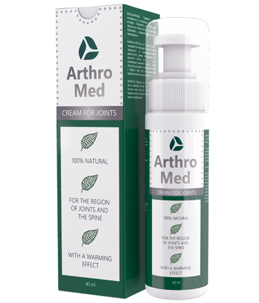

ΑΜΕΡΙΚΑΝΙΚΗ ΠΡΑΚΤΙΚΗ ΘΕΡΑΠΕΙΑΣ ΓΙΑ ΤΗΝ ΚΑΤΑΠΟΛΕΜΗΣΗ ΑΣΘΕΝΕΙΩΝ ΤΟΥ ΜΥΟΣΚΕΛΕΤΙΚΟΥ ΣΥΣΤΗΜΑΤΟΣ (ΑΡΘΡΩΣΕΩΝ)
Γκρέγκορι Λαμπέλ
Εργασιακή πρακτική 35 χρόνια
Ο καθηγητής Ιατρικής, Γκρέγκορι Λαμπέλ είναι ο επικεφαλής του Ορθοπεδικού τμήματος και του τμήματος Χειρουργικής αρθρώσεων στο Ιατρικό κέντρο του Μέριλεντ, ΗΠΑ.
Ο κύριος Λαμπέλ έκανε την πρακτική του στο ορθοπεδικό τμήμα του νοσοκομείου Τζον Χόπκινς (ΗΠΑ), εκπαιδεύθηκε στην χειρουργική στο Ινστιτούτο Ορθοπεδικής.
Ο κύριος Λαμπέλ ειδικεύεται στους ακόλουθους τομείς της ιατρικής: χειρουργική επέμβαση κατά την αρθρίτιδα, αποκατάσταση αρθρώσεων σε παιδιά και εφήβους, συμπεριλαμβανομένης της αποκατάστασης σχισμένων συνδέσμων, αντικατάσταση ώμου, ισχίου, αρθρώσεων του γόνατος και του αστραγάλου, τραυματολογία αρθρώσεων, ορθοπεδικές παθήσεις των ώμων.
Είναι μέλος της επιτροπής της Αμερικάνικης Ορθοπαιδικής Εταιρείας, του Αμερικάνικου Συλλόγου Ωμοθεραπείας, του Αμερικάνικου Συλλόγου Αρθροσκοπικής Χειρουργικής, της Χειρουργικής Γόνατος και της Χειρουργικής Ισχίου. Ο κύριος Λαμπέλ είναι Πρόεδρος του Συλλόγου Αποφοίτων Χειρουργικών τμημάτων Πανεπιστημίων των Ηνωμένων Πολιτειών.
«Να θυμάστε την απλή αλήθεια και μην ακούτε κανέναν: οι αρθρώσεις μπορούν να θεραπευτούν πάντα, ακόμα και στην βαθιά γήρανση»
Ο Δρ. Λαμπέλ, μαζί με τους επιστήμονες του Πανεπιστημίου του Σικάγου, έχουν αναπτύξει ένα μη επεμβατικό σύστημα θεραπείας των αρθρώσεων. Πριν από ενάμισι χρόνο, ξεκίνησε μια νέα τεχνολογία για την καταπολέμηση των μυοσκελετικών διαταραχών. Χάρη σε αυτές τις μελέτες, κάθε κάτοικος της Ευρώπης θα είναι σε θέση να εξοικονομήσει τον χρόνο και την υγεία του. Πώς μπορείτε να καταπολεμήσετε τον πόνο και να επιστρέψετε στο συνηθισμένο ρυθμό της ζωής σας; Ο καθηγητής Ιατρικών Επιστημών, ο κύρις Λαμπέλ, μας ενημέρωσε για αυτό το πρόγραμμα. Ο γιατρός δηλώνει ότι ο πόνος στις αρθρώσεις με τη σωστή προσέγγιση μπορεί να περάσει μέσα σε 21 ημέρες.
Σε όλη τη διάρκεια της 35χρονης επαγγελματικής του δραστηριότητας επιβεβαιώνει κάθε δήλωση στην πράξη. Αμέσως μετά την εκπομπή στο τηλεοπτικό κανάλι EuropNews (με θέμα «το πως να διατηρήσουμε την υγεία των αρθρώσεων σε οποιαδήποτε ηλικία»), ο διάσημος καθηγητής συμφώνησε να μας δώσει μια συνέντευξη.
— Χαίρετε, κύριε καθηγητά. Πείτε μου εάν ισχύει η άποψη ότι οι ασθένειες των αρθρώσεων και η οστεοχόνδρωση είναι οι «υποχρεωτικοί» σύντροφοι της ώριμης ηλικίας;
— Γεια σου, Ειρήνη! Φυσικά και δεν είναι αλήθεια. Οι υποχρεωτικοί σύντροφοι της ώριμης ηλικίας είναι η υπερβολική εμπιστοσύνη στους γιατρούς που σας θεραπεύουν 10 χρόνια, αλλά δεν μπορούν τελικά να θεραπεύσουν. Αλλά στην πραγματικότητα οι αρθρώσεις, η χονδρική όψη και όλος ο σκελετός μπορούν να γιατρευτούν σε οποιαδήποτε ηλικία. Αυτό δεν είναι θαύμα, αλλά η απλή επιστήμη. Επιπλέον, εάν γνωρίζετε το βασικό μυστικό και βάλετε τα δυνατά σας, μπορείτε να θεραπεύσετε τον εαυτό σας στο σπίτι και, μάλιστα, πολύ γρήγορα, όπως κάνουν οι χιλιάδες ασθενείς μου.
— Και πιο είναι το βασικό μυστικό;
— Το μυστικό κρύβεται στην κατανόηση του πόνου. Οι εγκυκλοπαίδειες αναφέρουν για 147 πιθανές αιτίες οστεοχόνδρωσης και αρθροπάθειας, αλλά το αποτέλεσμα είναι ένα - οι αρθρώσεις, οι σπόνδυλοι και ο χόνδρος χάνουν την ελαστικότητά τους - εξ ου και ο πόνος. . Έτσι, γίνεται η φθορά τους λόγω της κακής παροχής αίματος.

Ιδού το μυστικό: αποκαθιστώντας την παροχή του αίματος στην άρθρωση, την θεραπεύουμε!
— Ναι, αλλά θεωρείται ότι είναι σχεδόν αδύνατο να αποκατασταθεί η παροχή του αίματος σε ηλικίες μετά τα 40;
— Όλα αυτά είναι βλακείες! Έχω βγάλει πολλούς ανθρώπους από αναπηρικά καροτσάκια μετά τα ατυχήματα και άλλα δυσάρεστα συμβάντα, κάτι που είναι πιο τρομακτικό από το να γίνεσαι 40 χρονών.
— Ποια είναι τα πρώτα συμπτώματα της επιδείνωσης λειτουργίας των αρθρώσεων μετά τα 40;
Τα πρώτα συμπτώματα μπορούν να ληφθούν υπόψη όταν ο ασθενής νιώθει πόνο στις αρθρώσεις στα χέρια ή στα πόδια. Αυτό συμβαίνει λόγω της φυσικής υπερφόρτωσης των αρθρώσεων, την άρση βαρών, όπως οι βαριές σακούλες, τα άβολα παπούτσια, οι επαναλαμβανόμενες κινήσεις, όλα αυτά οδηγούν σε υπερφόρτωση. Ο αρθρικός χόνδρος καταστρέφεται, τα οστά αρχίζουν να αγγίζουν το ένα με το άλλο, έτσι νιώθετε μια δυσφορία. Ως αποτέλεσμα, εμφανίζονται πρώτα η δυσκαμψία της κίνησης και η φλεγμονή και, στη συνέχεια, το άκρο μπορεί να μην αντιδρά. Επίσης, μεγάλο ρόλο παίζει η υψηλή περιεκτικότητα σε αλάτι στο σώμα. Εάν τα πόδια ή τα χέρια σας πονάνε, πρέπει επειγόντως να περιορίσετε τον εαυτό σας στην κατανάλωση τροφίμων και υγρών που περιέχουν νάτριο:
Δεν συνιστάται να πίνετε:
- Αναψυκτικά
- Χυμός ντομάτας
- Άλμη
- Αλκοολούχα ποτά
- Γαλακτοκομικά προϊόντα με περιεκτικότητα σε νάτριο
Δεν συνιστάται να τρώτε:
- Αλατισμένο βούτυρο, μαργαρίνη
- Όλα τα είδη σκληρών και μαλακών τυριών
- Καπνιστό κρέας, ζαμπόν, μπέικον, ασορτί αλλαντικών, κονσερβοποιημένα κρέατα
- Λουκάνικα, σαλάμια (βιομηχανικά παρασκευασμένα λουκάνικα και άλλα κρεατικά, στα οποία προστίθενται διάφορα συντηρητικά και σταθεροποιητές που περιέχουν πολύ νάτριο)
- Στιγμιαία πιάτα από κρέας και ψάρι (κονσερβοποιημένα ή κατεψυγμένα)
- Καπνιστά και κονσερβοποιημένα ψάρια και θαλασσινά
- Καβούρια, αστακοί, γαρίδες, καραβίδες (εκτός εάν παρασκευάζονται χωρίς αλάτι)
- Κονσερβοποιημένα λαχανικά (εκτός από ειδικά, όπου δεν χρησιμοποιείται αλάτι ως συντηρητικό), παστό βοδινό, λάχανο τουρσί
- Πατατάκια, τηγανισμένους και αλμυρούς ξηρούς καρπούς, φυστικοβούτυρο
- Σάλτσες, σως, κέτσαπ, σάλτσες για σαλάτες, μαρινάδες (εκτός από σπιτικά χωρίς αλάτι)
- Όλα τα είδη στιγμιαίας σούπας
— Πώς βγάζατε τους ανθρώπους από τα αναπηρικά καροτσάκια;
— Είναι αρκετά δύσκολο. Σημαντικό είναι να ενθαρρύνεις τον ασθενή και να του δώσεις να καταλάβει ότι το να σηκωθεί από το καροτσάκι και να αρχίσει να περπατά είναι ΕΥΚΟΛΟ! Οι περισσότεροι από τους ασθενείς μου είναι απλοί άνθρωποι στην ηλικία άνω των 40 ετών, στους οποίου η ασθένεια εξελίχθηκε με το πέρασμα του χρόνου. Έρχονται με παρόμοια προβλήματα: οστεοχόνδρωση, αρθροπάθεια, αρθρίτιδα, ισχιαλγία, πιασμένο νεύρο. Αυτές οι ασθένειες εξαντλούνται και παρεμποδίζουν τη ζωή. Οι ασθενείς μου φωνάζουν, πονάνε, περπατούν με δυσκολία. Απλοί άνθρωποι, δεν είναι ούτε αθλητές, ούτε άτομα με ειδικές ανάγκες. Μου παραπονιούνται: «Γιατί σε εμένα συμβαίνουν αυτά; Γιατί εγώ;». Εγώ απαντάω: «Μην διαμαρτύρεστε, καλύτερα ξεκινήστε την αποκατάσταση της παροχής αίματος».
— Πώς μπορεί να αποκατασταθεί η παροχή αίματος σε αυτήν την ηλικία;
— Μέχρι πρόσφατα, θεράπευα τους ανθρώπους με τη βοήθεια της κίνησης και ένα πρόγραμμα από 96 ασκήσεις στα μηχανήματα. Αυτή είναι μια εξαιρετικά αποτελεσματική, αλλά πολύ δύσκολη και χρονοβόρα μέθοδος. Οι άνθρωποι πονούν, είναι δύσκολο, δεν έχουν πολύ χρόνο για να πηγαίνουν γυμναστήριο. Πίστευα ότι πρέπει να υπάρχει ένας πιο σύγχρονος και εύκολος τρόπος και τον βρήκα.
— Πολύ ενδιαφέρον! Εξηγήστε μας λίγο παραπάνω.
— Θα σας πω. Το κέντρο μας ήταν το πρώτο στον κόσμο που έλαβε την πιστοποιημένη πρόσβαση στο νεότερο φάρμακο για την οστεοχόνδρωση και τον πόνο στις αρθρώσεις. Σας ομολογώ άκουσα για αυτό για πρώτη φορά, απλά γέλασα, γιατί δεν πίστευα στην αποτελεσματικότητά του. Έπαθα σοκ, όταν ολοκληρώσαμε τις δοκιμές: 4 567 άτομα θεραπεύθηκαν πλήρως, που είναι πάνω από το 94% όλων των ασθενών. Το 5,6% αισθάνθηκε σημαντικές βελτιώσεις και μόνο το 0,4% δεν είδε καμία βελτίωση.
Μιλάω για την ειδική κρέμα «Arthromed». Είναι ένα προϊόν το οποίο σας επιτρέπει το πολύ μέσα σε 21 ημέρες, να ξεχάσετε τον πόνο στην πλάτη και στις αρθρώσεις και σε μερικούς μήνες να θεραπεύσετε ακόμη και τις πιο δύσκολες περιπτώσεις. Το Υπουργείο Υγείας έχει επενδύσει πάνω από 30 εκατομμύρια δολάρια για την αναπτύξει των συστατικών του προϊόντος.
— Πώς λειτουργεί αυτή η κρέμα;
— Είναι μια απλή επιστήμη. Η κρέμα αποτελείται από 9 ισχυρά συστατικά που, όταν έρχονται σε επαφή με ένα παλιό, αδύναμο ανθρώπινο κύτταρο, το κάνουν να λειτουργεί 7 φορές πιο γρήγορα, οπότε το κύτταρο ανανεώνεται βαθμιαία.
— Ακόμη και με μία μόνο εφαρμογή της κρέμας στην πληγείσα περιοχή, ενεργοποιούνται περίπου 930.000 κύτταρα που ωφελούν την κυκλοφορία του αίματος στον οργανισμό σας. Έτσι πραγματοποιείται και η αποκατάσταση. Σημαντικό ρόλο εδώ παίζει η σταθερότητα, δηλαδή, η συνεχόμενη θεραπεία. Με αυτό τον τρόπο θα μάθετε τα κύτταρά σας να εργάζονται συνεχώς.
— Ακούγεται εντυπωσιακό. Εξηγήστε μας τι σημαίνει αυτό για τους απλούς ασθενείς;
— Αυτό σημαίνει ότι η μεσαιωνική ευρωπαϊκή ιατρική είναι πλέον παρελθόν και μπορείτε να θεραπεύσετε τις ασθένειές σας στο σπίτι μέσα σε ένα ή δύο μήνες. Η κρέμα «Arthromed», δεν παγώνει, δεν αναισθητοποιεί, «επανεκκινεί» τον οργανισμό σε κυτταρικό επίπεδο. Εξαφανίζοντας την αιτία του ίδιου του πόνου, επιστρέφει τις κατεστραμμένες αρθρώσεις του σώματός μας στην αρχική, τη φυσική τους μορφή. Ο ασθενής δεν απαλλάσσεται απλά από τα συμπτώματα, του αφαιρείται η ρίζα της νόσου – μειωμένη και αργή παροχή αίματος στον χόνδρο λόγω των παλιών κυττάρων.
Την πρώτη ημέρα η κρέμα ξεκινά την αναγέννηση του οργανισμού. Ανακουφίζει από τον πόνο, κάτι που θα αισθανθείτε αμέσως. Σε δύο ή τρεις εβδομάδες η θεραπεία θα ολοκληρωθεί και, το σημαντικότερο, θα αποφευχθεί η επανεμφάνιση των παθήσεων με την ταχεία επανάληψη της θεραπείας.
— Όπως κατάλαβα, αυτή η κρέμα δεν βοηθά μόνο κατά της οστεοαρθρίτιδας και της οστεοχόνδρωσης, Ποια είναι τα υπόλοιπα πλεονεκτήματά της;
Κοιτάξτε, καθώς η κρέμα λειτουργεί σε κυτταρικό επίπεδο και προσπαθεί να αποκαταστήσει την παροχή αίματος, θεραπεύει οποιαδήποτε ασθένεια που σχετίζεται με τις αρθρώσεις και τη σπονδυλική στήλη - αρθροπάθεια και αρθρίτιδα, ισχιαλγία, ρευματισμούς, ριζοπάθεια και οστεοχόνδρωση. Είναι ήδη αποδεδειγμένο! Οι εξάρσεις, οι μώλωπες, τα κατάγματα, ακόμη και οι κάλοι - η κρέμα «Arthromed» αποδείχτηκε εκπληκτικά αποτελεσματική, ακόμη και για μένα, ως χειρουργό.
Θέλω να με καταλάβετε σωστά. Μου αρέσει η φυσική άσκηση και ο αθλητισμός, τους οποίους δεν θα σταματήσω, αλλά για το μεγαλύτερο μέρος των ασθενών, η θεραπεία στο σπίτι είναι το πρώτο και το πιο απλό βήμα για την αποκατάσταση της υγείας. Το 3% των ασθενών μου, κατά την πρώτη εβδομάδα, κατάφεραν να ενσωματώσουν τη σωστή σωματική άσκηση στη ζωή τους. Το υπόλοιπο 97% θεραπεύονται με χάπια ή τα χημικά παρασκευάσματα.
— Έχετε πει ότι η κρέμα «Arthromed» μπορεί να αγοραστεί σε μειωμένη τιμή; Είναι διαθέσιμη για όλους;
— Ναι, ισχύει αυτό. Για να διατηρηθεί το κόστος αποδεκτό για τους Ευρωπαίους, αποφασίστηκε η πώληση του προϊόντος μέσω της επίσημης ιστοσελίδας «Arthromed». Εκεί μπορείτε να παραγγείλετε την πρωτότυπη κρέμα «Arthromed». Ναι, ναι την πρωτότυπη, γιατί το τελευταίο καιρό, σταθήκαμε αντιμέτωποι με μια σειρά από απομιμήσεις. Επομένως, ζητάμε να παραγγέλνετε το προϊόν μόνο σε αυτόν τον σύνδεσμο.
— Πότε λήγει η προσφορά;
Η προσφορά λήγει στις 31.12.2018. Μέχρι τότε πρέπει να αφήσετε την αίτηση στον ιστότοπό μας. Θα επικοινωνήσουμε μαζί σας, θα σας πούμε λεπτομερείς πληροφορίες για το προϊόν και την ίδια μέρα θα την στείλουμε σε εσάς. Η αποστολή γίνεται γρήγορα, έως 3 ημέρες, σε όλες τις χώρες της Ευρώπης, χάρη στην υπηρεσία κούριερ.
Όσοι επιθυμούν να αποκτήσουν την κρέμα «Arthromed» και να κάνουν τη θεραπεία, συνιστούμε να βιαστείτε. Ήδη την έχουν παραγγείλει πάνω από διακόσια άτομα. Καθημερινά λαμβάνουμε πολλά θετικά σχόλια και χίλια ευχαριστώ. Αυτό το προϊόν βοηθά όλους.
ΠΡΟΣΟΧΗ στις απομιμήσεις!
Μπορείτε να αποκτήσετε την κρέμα «Arthromed» μόνο στην ΕΠΙΣΗΜΗ ΙΣΤΟΣΕΛΙΔΑ ΤΟΥ ΠΑΡΑΓΩΓΟΥ!
— Κύριε Λαμπέλ, σας ευχαριστώ πολύ για τη συνέντευξη! Μήπως θέλετε να πείτε κάτι στους αναγνώστες μας;
— Ναι, φυσικά. Θέλω να επιστήσω την προσοχή των αναγνωστών ότι από τις ασθένειες της μέσης και των αρθρώσεων πάσχουν πλέον και οι νέοι άνθρωποι. Ακόμη οι μικροί πόνοι απαιτούν ιδιαίτερη προσοχή. Ο γιατρός δεν θα σας πείσει να υποβληθείτε σε θεραπεία, αλλά αξίζει τον κόπο.
Να θυμάστε: οι ασθένειες που προκαλούνται από τον πόνο στη μέση και στις αρθρώσει δεν προκαλούν μόνο δυσφορία. Μειώνουν τη ζωή κατά 10-15 χρόνια.
Τη συνέντευξη πήρε
η Ειρήνη Λάκκου

Πηγαίνετε στον επίσημο ιστότοπο "Arthromed"
194 σχόλια
Πήρα αυτήν την κρέμα σε μια προσπάθεια να απαλλαχθώ από τον πόνο στις αρθρώσεις, αν και δεν πίστευα ότι θα υπάρχει κάποιο αποτέλεσμα. Προσωπικά εμένα με βοήθησε, γι' αυτό έγινε ένα μόνιμο και απαραίτητο συστατικό στο κουτί πρώτων βοηθειών της οικογένειάς μου.
Μια ενδιαφέρουσα κρέμα για τη θεραπεία των αρθρώσεων, δεν αφήνει λεκέδες στα ρούχα και απορροφάται γρήγορα. Με βοήθησε αρκετά. Κατ' αρχήν, τη συστήνω σε όλους εκείνους που έχουν προβλήματα με τις αρθρώσεις. Σου προσφέρει την καθολική θεραπεία. Βρήκα την προσφορά στην επίσημη ιστοσελίδα.
Γεια σε όλους! Είμαι 68 ετών. Ζήτησα την εγγονή μου να γράψει αυτό το σχόλιο. Είμαι ένας απλός χωριάτης, μια ζωή δουλεύω. Παλιά δουλεύαμε ασταμάτητα. Με το που βγήκα στη σύνταξη, η σκληρή δουλειά άρχισε να θυμίζει για τον εαυτό της με έναν οξύ πόνο στις αρθρώσεις. Μου πονούσαν όλες οι αρθρώσεις: στην οσφύ, στα ισχία, στα γόνατα, στους αστραγάλους. Υπήρχαν μέρες που έκλαιγα από τον πόνο. Μια μέρα ήμουν ξαπλωμένος στον κήπο του σπιτιού μου, μέχρι που ήρθε η κόρη μου. Στο νοσοκομείο διαγνώσθηκα με την αρθροπάθεια και μου έγραψε ο γιατρός να εφαρμόζω μια αλοιφή, η οποία δεν είχε νόημα. Αυτή ήταν η θεραπεία μου. Στη συνέχεια μετά από μερικούς μήνες, διάβασα σε ένα γιατρικό περιοδικό για την κρέμα «Arthromed», διάβασα τα σχόλια και ζήτησα από την εγγονή μου να μου την παραγγείλει στο Διαδίκτυο. Μόνος μου δεν μπορούσα να το κάνω. Άρχισα να την εφαρμόζω καθημερινά στη μέση και οι πόνοι σταμάτησαν. Μετά από 4 ημέρες μπόρεσα να περπατήσω ελεύθερα στο σπίτι. Μετά από 2,5 μήνες χρήσης της κρέμας, οι αρθρώσεις σταμάτησαν να πονάνε! Χάρη στην κρέμα, επέστρεψα στη φυσιολογική μου ζωή. Ακούστε τον γέρο!
Περνάω τον περισσότερο χρόνο καθιστή και προς το τέλος της ημέρας η μέση μου δεν αντέχει άλλο, ενώ οι αρθρώσεις βουίζουν και πονούν. Χρησιμοποιώ αυτήν την κρέμα εδώ και ένα μήνα, μου αρέσει το αποτέλεσμα. Αναζωογονεί το δέρμα και δίνει ελάφρυνση στην κίνηση. Αγόρασα όλη τη θεραπεία, επειδή στην επίσημη ιστοσελίδα είχε έκπτωση!
Οι γιατροί είπαν ότι για την ασθένειά μου φταίει η ηλικία μου και αυτό με πλήγωσε πολύ. Αν είναι δυνατόν! Νιώθω νέα. Όλη μου η ζωή είναι η οικογένειά μου, ο κήπος μου, τα λουλούδια μου. Λόγω της ασθένειας, η συνηθισμένη βόλτα στα μαγαζιά στον απέναντι δρόμο έγινε Γολγοθάς. Έχω πόνους στις αρθρώσεις, στη μέση, η μεσοσπονδυλική κήλη με έκανε να σταματήσω τον κανονικό τρόπο ζωής. Ήμουν καμπουριασμένη, το σώμα μου φαινόταν στραβό. Οι αναζητήσεις της νέας θεραπείας με οδήγησαν σε αυτό το καινούριο προϊόν κατά του πόνου στις αρθρώσεις. Έβαζα την κρέμα στη μέση, στα γόνατα και έκανα ασκήσεις γυμναστικής. Σαν αποτέλεσμα, το σώμα μου ευθυγραμμίστηκε, ξεκίνησα να περπατάω εύκολα και φυσιολογικά. Χάρη στην κρέμα, βολτάρω πολλές ώρες με την εγγονή μου και παρακολουθώ διάφορες εκθέσεις και εκδηλώσεις.
Για να είμαι ειλικρινής, αρχικά ήμουν πολύ σκεπτικός. Αλλά η σύζυγός μου μου την παρήγγειλε τελικά. Το αποτέλεσμα με εξέπληξε και το αποτέλεσμα δεν άργησε να φανεί. Μου άρεσε πολύ!
Αυτό το καλοκαίρι, η ουρική αρθρίτιδα με ταλαιπώρησε με άγριους πόνους. Περπατούσα με το ζόρι, κούτσαινα. Δεν μπορούσα να δουλεύω, κατηγορούσα τον εαυτό μου, ντρεπόμουν, όταν έβλεπα τη γυναίκα και την κόρη μου να κάνουν τις αντρικές δουλειές. Με τη σύζυγο κοιμόμασταν χωριστά, φοβόμουν μην με ακουμπήσει στον ύπνο. Σύντομα, η ουρική αρθρίτιδα εμφανίστηκε και στον δείκτη του δεξιού χεριού, ήταν περίπου 1,5 εκ. σε μέγεθος. Δουλεύω ως γραφίστας σε μια επιχείρηση. Ανεξάρτητα από τους δυνατούς πόνους, έκανα υπομονή, δούλευα με το ζόρι, έκανα τα σχέδια, τα περίπτερα, φοβόμουν μην με απολύσουν. Πρόσφατα έμαθα για το καινούργιο προϊόν. Αποφάσισα να το δοκιμάσω. Μετά από λίγες μέρες χρήσης, οι πόνοι και η φλεγμονή υποχώρησαν. Χάρη σε σας, εδώ και ένα μήνα ζω φυσιολογικά, απολαμβάνοντας την παλιά μου ζωή. Τώρα μπορώ να δίνω το χέρι μου στους φίλους μου. Κοιμάμαι τη νύχτα, αγκαλιάζω τη σύζυγό μου.
Εδώ και χρόνια υποφέρω από τους πόνους στις αρθρώσεις, ειδικά όταν έχει υγρασία. Έχω δοκιμάσει διάφορα έμπλαστρα, αλλά με βοήθησε μόνο αυτή η κρέμα. Την έβαλα μόνο μια φορά και ο πόνος έχει ήδη αρχίσει να μειώνεται! Τώρα την χρησιμοποιώ τακτικά. Έχω παραγγείλει την κρέμα Arthromed σε αυτήν την ιστοσελίδα.
Εγώ που είμαι οδηγός και δουλεύω οχτώ ώρες την ημέρα, αυτή η κρέμα με βοηθά να αντιμετωπίσω τον πόνο στον αυχένα, καθώς και στη μέση.
Η γυναίκα μου πάσχει από αρθρίτιδα και αρθροπάθεια από τη δεκαετία του '80, αλλά τα τελευταία 2 χρόνια ο πόνος υπήρχε πάντα. Δεν μπορούσα ποτέ να φανταστώ ότι ένας άνθρωπος μπορεί να ουρλιάζει έτσι από τον πόνο. Ήταν τρομακτικό, ειδικά τη νύχτα, μέσα στην ησυχία άκουγα τις δυνατές κραυγές. Όπως έλεγε η ίδια, ο πόνος ήταν σαν να την τρώνε τα σκυλιά. Δεν μπορούσα να την βοηθήσω καθόλου, κρατούσα μόνο το χέρι της και την καθησύχαζα. Έπαιρνε παυσίπονα και έπεφτε για ύπνο, μετά από λίγο καιρό τα ίδια. Το πρωί με το που ξυπνούσε, έκλαιγε ολοένα και περισσότερο. Το χαμόγελο εξαφανίστηκε από το πρόσωπό της, σαν να είχε αφήσει ο ήλιος για πάντα το σπίτι μας. Επίσης, κινούταν με δυσκολία, οι αρθρώσεις του γόνατος και το ιερό οστό δεν της έδιναν τη δυνατότητα ούτε να στρίψει. Η πρώτη νύχτα μετά την εφαρμογή της κρέμας πέρασε για πρώτη φορά χωρίς τις κραυγές. Το πρωί με πλησίασε η γυναίκα μου χαρούμενη και μου λέει χαμογελώντας: «Ο πόνος δεν υπάρχει πια!». Την έκτη μέρα αγόρασα άλλες έξι συσκευασίες της κρέμας. Πρώτη φορά μέσα σε 2 χρόνια είδα τη γυναίκα μου ευτυχισμένη και χαμογελαστή. Επιτέλους, βλέπω ζωντάνια στα μάτια της.
Σε έναν συγγενή μου δεν λειτούργησε το χέρι μετά από ένα εγκεφαλικό επεισόδιο και τα δάχτυλά του δεν λύγιζαν εξαιτίας του πόνου. Του αγόρασα την κρέμα και είπα: «ΒΑΛ’ ΤΗΝ!» Βέβαια, είναι τεμπέλης, αλλά ακόμη και μετά από μερικές εφαρμογές αισθάνθηκε καλύτερα. Πρώτον, πέρασαν οι πόνοι στα δάχτυλα και μπορούσε να τα ευθυγραμμίσει ελεύθερα, και δεύτερον, όλο το χέρι άρχισε να κινείται κανονικά, ο ώμος και ο αγκώνας. Λίγο έμεινε μέχρι την πλήρη αποκατάσταση.
Το προϊόν είναι πραγματική σωτηρία για όσους γνωρίζουν για τους πόνους από πρώτο χέρι. Για ένα χρόνο υπέφερα οδυνηρά. Οι αρθρώσεις στα πόδια είχαν φλεγμονή μέχρι που δεν μπορούσα να σηκώνομαι στα πόδια, οι αστράγαλοί μου ήταν πρησμένοι, είχα πόνους στην σπονδυλική στήλη που εξαπλώνονταν σε όλο το σώμα. Τα χέρια μου πρήστηκαν, άρχισαν να μουδιάζουν. Ο πόνος συγκεντρώθηκε στο αριστερό χέρι, μούδιασαν τα 3 δάχτυλα. Απευθύνθηκα σε έναν θεραπευτή μασάζ, ο οποίος με έσωζε από την επιδείνωση της οστεοχόνδρωσης, πίστευα ότι αυτή ήταν η αιτία. Το μασάζ δεν με βοήθησε, είχα προσωρινές βελτιώσεις κατά 10 τοις εκατό, και στη συνέχεια τα ίδια, πόνος και ταλαιπωρία. Μια γνωστή μου έδωσε την κρέμα Arthromed. Την ίδια ημέρα ένιωσα τη μείωση του πόνου. Στην αρχή μου φάνηκε για αυτο-ύπνωση Αλλά όταν την τέταρτη μέρα έπεσε η φλεγμονή και οι πόνοι πέρασαν μέσα σε 3 εβδομάδες, κατάλαβα ότι αυτή είναι η σωτηρία μου!
Πρόσφατα άρχισαν να πονάνε οι αρθρώσεις στα γόνατά μου. Ο γιατρός είπε ότι πρέπει να αρχίσω τη θεραπεία αμέσως, μου έδωσε μια θεραπεία με ενέσεις. Η αδελφή της γυναίκας μου με έπεισε να δοκιμάσω αυτήν την κρέμα. Ένα μήνα τη χρησιμοποιώ – νιώθω αρκετά καλύτερα.
Με την αλλαγή του καιρού τα κόκκαλά μου άρχισαν να πονούν από το κρύο. Αναγκάστηκα να πάω σε γιατρό. Μου συμβούλεψε την κρέμα Arthromed. Έχω διαβάσει πολλά άρθρα για αυτήν στα ιατρικά περιοδικά, να που βρήκα πληροφορίες και εδώ. Ενδιαφέρον. Σημαντικό είναι να αγοράζετε στην επίσημη ιστοσελίδα – ιδού ο σύνδεσμος, που έχει και προσφορές. Καλή η κρέμα, θα συνεχίσω να την χρησιμοποιώ.
Τον Μάρτιο τραυμάτισα άσχημα τη μέση μου, για 2 μήνες δεν μπορούσα να ξαπλώνω ανάσκελα. Κοιμόμουν, βάζοντας 6-8 μαξιλάρια κάτω από το στομάχι μου ... Τον Ιανουάριο μου έδωσαν αυτήν την κρέμα, αν και ήμουν πολύ επιφυλακτικός για αυτό το φάρμακο. Μετά από ένα μήνα χρήσης, μπορώ να κάνω σχεδόν όλες τις ακροβατικές ασκήσεις.
Είμαι πάρα μα πάρα πολύ ευχαριστημένη! Εδώ και ένα χρόνο βασανιζόμουν με τις αρθρώσεις του γόνατος, οι γιατροί έχουν δοκιμάσει τα πάντα. Μετά μου είπαν για την ανάγκη αντικατάστασης των αρθρώσεων (έχω διαβήτη, κακοήθη υπέρταση και πολλά άλλα). Περπατούσα μόνο με το μπαστούνι. Η ανηφόρα στη σκάλα ήταν ανυπόφορη, η κατηφόρα ακόμη χειρότερη. Τώρα, την άνοιξη, από περιέργεια (επειδή δεν πιστεύω σε τίποτα πλέον) έστειλα ένα μήνυμα στην ιστοσελίδα και περιέγραψα την κατάστασή μου. Με πήραν τηλέφωνο, ρώτησαν για τα πάντα, είπαν ότι είναι βέβαιοι ότι αυτή η κρέμα θα με βοηθήσει και τους πίστεψα. Άρχισα να εφαρμόζω την κρέμα στα γόνατα. Άρχισα να αισθάνομαι ανακούφιση την πρώτη μέρα. Τα γόνατά μου είναι καλά, περπατάω χωρίς μπαστούνι, δεν με ενοχλούν τη νύχτα, στις σκάλες δεν τρέχω, αλλά ανεβαίνω χωρίς βοήθεια. Δεν ξέρω αν οι πόνοι και τα προβλήματα εξαφανίστηκαν για πάντα, ΑΛΛΑ ΣΗΜΕΡΑ είμαι πολύ ικανοποιημένη και υποκλίνομαι μπροστά στους παραγωγούς αυτών των προϊόντων! ΕΥΧΑΡΙΣΤΩ!!! Δεν τη διαφημίζω, απλά χαίρομαι! Arthromed!!!
Εδώ και χρόνια μου πονούσε η μέση μου. Τίποτα δεν βοηθούσε. Ο γιατρός μου συμβούλεψε αυτήν την κρέμα. Έγινε το θαύμα! Με βοήθησε πραγματικά!!!
Τέλειο προϊόν! Ανακουφίζει αμέσως, όταν έρχεται σε επαφή με το δέρμα, αμέσως αισθάνεσαι την επίδρασή του, μυρίζει καλά, απορροφά καλά, δεν αφήνει λιπαρή λάμψη και το πιο σημαντικό είναι πολύ αποτελεσματικό. Έχω αυχενική οστεοχόνδρωση. Μια φορά που έβαλα την κρέμα, αμέσως ανακουφίστηκα. Μετά από 2-3 εβδομάδες ξέχασα τελείως για τον πόνο. Το συνιστώ σε όλους!
Είμαι πολύ ενθουσιασμένη! Έχω δοκιμάσει τόσα προϊόντα, μόνο αυτή η κρέμα μου έδωσε το αναμενόμενο αποτέλεσμα! Δεν υπάρχει άλλος πόνος, καμία ακαμψία! Πόσο μου έχει λείψει η ελευθερία της κίνησης! Θα την πάρω και στον σύζυγό μου.
Είμαι 42 ετών. Πριν από μερικά χρόνια είχα μια σοβαρή γρίπη, μετά την οποία μπήκα στο νοσοκομείο με επιπλοκές. Μία από τις επιπλοκές ήταν η φλεγμονή των αρθρώσεων, ειδικά στο γόνατο. Η ακτινογραφία έδειξε τα αρχικά σημάδια της αρθροπάθειας της άρθρωσης του γόνατος. Τότε ήμουν 39 ετών. Το περπάτημα συνοδευόταν από ήχους «κλίκ ή κράκ» στο γόνατο, όταν ανέβαινα τις σκάλες είχα οδυνηρούς πόνους. Έχω δοκιμάσει πολλά προϊόντα: κάτι με βοήθησε περισσότερο, κάτι λιγότερο. Αλλά μόνο αυτή η κρέμα έχει ικανοποιήσει όλες τις απαιτήσεις μου. Κατάφερε να μειώσει όλους αυτούς τους περίεργους ήχους στις αρθρώσεις. Η τελευταία ακτινογραφία δεν έδειξε τίποτα. Θέλω να δώσω χαιρετίσματα σε αυτού τους γιατρούς, που μου έλεγαν ότι χειρότερα δεν γίνεται. Έχω την κρέμα μαζί μου και την συνιστώ σε όλους. Με έσωσε η κρέμα Arthromed.
Εδώ και καιρό τίποτα δεν με βοηθά να απαλλαχθώ από τους πόνους στις αρθρώσεις. Έχω δοκιμάσει ένα σωρό φάρμακα: χάπια, αλοιφές, τρίψιμο. Όλα μάταια. Μια φίλη μου είπε να παραγγείλω την κρέμα Arthromed σε αυτήν την ιστοσελίδα. Νομίζω δεν έχω τίποτα να χάσω, εξάλλου η τιμή δεν είναι υψηλή. Το αποφάσισα και την παρήγγειλα. Ένα μήνα μετά το μαρτύριο μου σχεδόν τελείωσε. Μετά από άλλο ένα μήνα ξέχασα τελείως για τον πόνο. Την χρησιμοποιώ τακτικά και είμαι πολύ ικανοποιημένος.
Μου πονούσε ο ώμος μου, δεν μπορούσα να σηκώσω το χέρι μου. Έτυχε να έχει την κρέμα μαζί του ένας συνάδελφός μου, την έβαλα στον ώμου μου και ο πόνος πέρασε μετά από σαράντα λεπτά. Η αίσθηση ήταν πολύ ευχάριστη, σαν να έχω βάλει κάτι ζεστό. Ένιωθα τόσα καλά που άρχισα να νυστάζω. Μετά αγόρασε την κρέμα και στον εαυτό μου, από τότε την έχω πάντα μαζί μου. Μόλις αρχίσει να πονά η μέσα ή το χέρι, βάζω την κρέμα και ο πόνος αποχωρεί.
Πηγαίνετε στον επίσημο ιστότοπο "Arthromed"